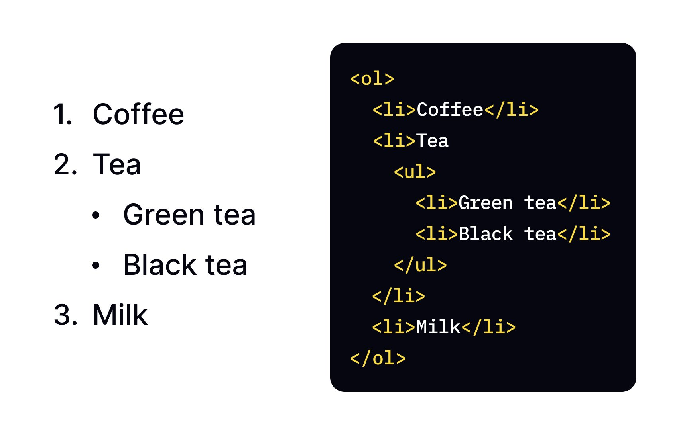

WELCOME TO HTML TUTORIAL
HTML Lists - Organizing Content with Ordered, Unordered, and Description Lists
HTML lists are essential elements for organizing and structuring content on web pages. They help break down information into digestible chunks, making it easier for visitors to scan and understand your content. This tutorial covers the three main types of HTML lists and how to implement them effectively.
Unordered Lists
Unordered lists (ul) are used when the order of items doesn't matter. Each item starts with a bullet point by default.
- Created using the <ul> tag
- Each list item uses the <li> tag
- Commonly used for navigation menus
- Default bullet style can be changed with CSS
- Can be nested inside other lists
Ordered Lists
Ordered lists (ol) are used when items need to be in a specific sequence. Each item is automatically numbered.
- Created using the <ol> tag
- Each list item uses the <li> tag
- Perfect for instructions or step-by-step guides
- Numbering styles can be modified with attributes
- Can continue numbering across HTML elements
Description Lists
Description lists (dl) are used for terms and their definitions, like a glossary or dictionary.
- Created using the <dl> tag
- Terms defined with <dt> tags
- Definitions provided with <dd> tags
- Perfect for FAQ sections
- Multiple definitions per term are allowed
HTML Lists Example
Unordered Lists in Detail
Unordered lists are perfect for displaying items that don't follow a specific sequence. Here's how to create a basic unordered list:
<ul>
<li>First item</li>
<li>Second item</li>
<li>Third item</li>
</ul>Styling Unordered Lists
You can change the bullet style using the CSS list-style-type property:
| Value | Description | Example |
|---|---|---|
| disc | Filled circle (default) | ● Item |
| circle | Empty circle | ○ Item |
| square | Filled square | ■ Item |
| none | No bullet | Item |
Ordered Lists in Detail
Ordered lists automatically number your items, making them ideal for step-by-step instructions:
<ol>
<li>First step</li>
<li>Second step</li>
<li>Third step</li>
</ol>Ordered List Attributes
| Attribute | Value | Description |
|---|---|---|
| type | 1 | Numbers (default): 1, 2, 3 |
| A | Uppercase letters: A, B, C | |
| a | Lowercase letters: a, b, c | |
| I | Uppercase Roman numerals: I, II, III | |
| i | Lowercase Roman numerals: i, ii, iii | |
| start | number | Specifies the start value (default is 1) |
| reversed | reversed | Reverses the counting order |
Example with Attributes:
<ol type="A" start="3">
<li>This will be item C</li>
<li>This will be item D</li>
<li>This will be item E</li>
</ol>Description Lists in Detail
Description lists are perfect for displaying term-definition pairs:
<dl>
<dt>HTML</dt>
<dd>HyperText Markup Language - the standard language for creating web pages.</dd>
<dt>CSS</dt>
<dd>Cascading Style Sheets - used for styling web pages.</dd>
<dt>JavaScript</dt>
<dd>A programming language that enables interactive web pages.</dd>
</dl>Nested Lists
Lists can be nested inside other lists to create hierarchical structures:
<ul>
<li>Front-End Development
<ul>
<li>HTML</li>
<li>CSS</li>
<li>JavaScript</li>
</ul>
</li>
<li>Back-End Development
<ul>
<li>PHP</li>
<li>Python</li>
<li>Node.js</li>
</ul>
</li>
</ul>Styling Lists with CSS
Beyond the basic styling options, you can customize lists extensively with CSS:
| CSS Property | Description | Example |
|---|---|---|
| list-style-type | Sets the type of bullet or numbering | list-style-type: square; |
| list-style-position | Specifies whether bullets appear inside or outside the content flow | list-style-position: inside; |
| list-style-image | Uses an image as the bullet | list-style-image: url('bullet.png'); |
| list-style | Shorthand property for all list style properties | list-style: square inside; |
| padding-left | Controls the indentation of the list | padding-left: 20px; |
Common List Use Cases
- Navigation menus (unordered lists)
- Step-by-step instructions (ordered lists)
- Feature lists and product benefits (unordered lists)
- FAQ sections (description lists)
- Site maps (nested unordered lists)
- Recipe ingredients and steps (combination of lists)
- Table of contents (ordered lists)
- Timeline of events (ordered lists)
List Accessibility Tips
- Always use semantic HTML list elements for actual lists
- Don't use lists just for indentation
- Ensure sufficient color contrast for bullets and numbers
- Maintain proper nesting hierarchy
- Add proper spacing between list items for readability
- Consider using ARIA roles when creating custom list components
Common List Mistakes to Avoid
- Using <br> tags and asterisks instead of proper list elements
- Creating overly deep nested lists (difficult to follow)
- Inconsistent capitalization and punctuation in list items
- Not using proper semantic structure for lists
- Overriding default list styles without considering accessibility
- Using list elements for non-list content for styling purposes